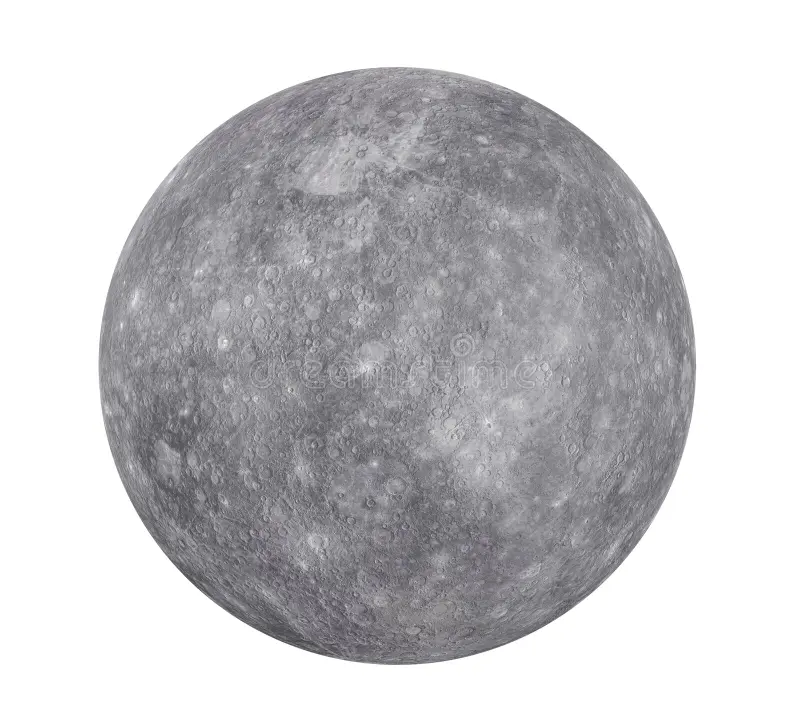
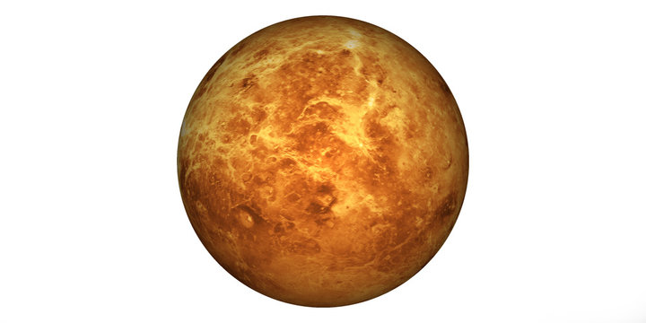

Mercury
Mercury is the smallest planet and closest to the Sun. Surface temperature variations are extreme and it has virtually no atmosphere.
Venus
Venus is similar in size to Earth but has a thick, toxic atmosphere and runaway greenhouse effect.
Earth
Earth is our home — the only known planet with liquid water on its surface and life as we know it.
Mars
Mars is known as the Red Planet. It has the largest volcano in the solar system, Olympus Mons.
Jupiter
Jupiter is the largest planet, a gas giant, famous for the Great Red Spot and many moons.
Saturn
Saturn is the ringed planet. Its rings are made of ice and rock particles.
Uranus
Uranus rotates on its side and has an icy composition with faint rings.
Neptune
Neptune is a distant ice giant with strong winds and dynamic weather patterns.